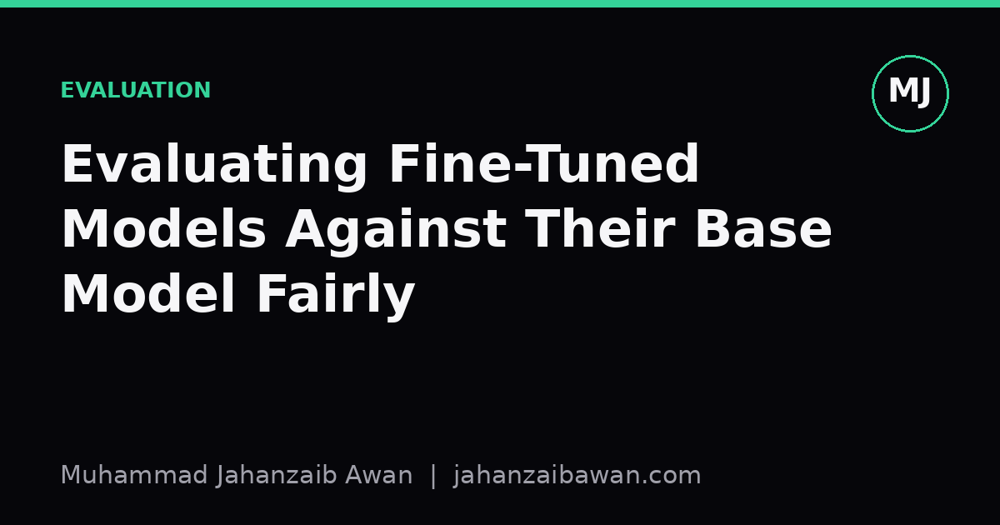

Evaluating Fine-Tuned Models Against Their Base Model Fairly
A fine-tuned model that looks better on your validation set is not automatically better. Here is a checklist for making the comparison honest.

Why the comparison is harder than it looks
Every time I fine-tune a model, the first question I get asked is simple: is it better than the base model? The honest answer usually takes longer to produce than the fine-tuning run itself, because a fair comparison requires controlling for a dozen small decisions that quietly favour whichever model you are rooting for. Most of the inflated improvements I see in write-ups are not lies, they are the result of an unfair setup that nobody noticed.
The core problem is that fine-tuning changes more than the weights. It often changes the prompt format, the tokenisation of certain inputs, the expected output style, and sometimes the exact examples the model has already seen. If you then evaluate the fine-tuned model on its native prompt format and the base model on a generic one, you are not measuring the effect of fine-tuning, you are measuring the effect of prompt mismatch. The base model was never given a fair chance to show what it can do.
This matters practically because decisions get made on these comparisons. Someone decides to ship the fine-tuned model, or to spend another week collecting data, or to write a report claiming a specific percentage improvement. If the comparison was not fair, all of that downstream decision-making is built on a number that would not replicate under different but equally reasonable conditions.
The leakage problem, worked through
The single most damaging issue is data leakage between the fine-tuning set and the evaluation set. Say you fine-tune on ten thousand examples scraped from a public source, then evaluate on a thousand held-out examples from the same source. If that source has near-duplicate entries, templated question structures, or overlapping passages, your held-out set is not really held out. The fine-tuned model may score eighty-eight percent accuracy while the base model scores seventy-one percent, and it looks like a seventeen-point win. Deduplicate properly, using something stronger than exact string matching, near-duplicate detection on normalised text, and the fine-tuned model's score might drop to seventy-nine percent. Still a real improvement, but half the size you originally reported.
A second, subtler version of this is temporal leakage. If your fine-tuning data was collected up to a certain date and your evaluation set contains events, facts, or terminology from after that date, the base model, if it was pretrained more recently, might actually know things the fine-tuned model does not. I have seen fine-tuned models look artificially strong simply because both the fine-tuning data and the evaluation data shared an outdated snapshot of the world, while the base model was penalised for having more current but differently phrased knowledge.
The fix is unglamorous but non-negotiable: build the evaluation set before you start fine-tuning, lock it, and never let it touch the training pipeline. Track the provenance of every example. If you cannot say with confidence that no fine-tuning example is a near-duplicate of an evaluation example, you cannot trust the comparison, no matter how good the numbers look.

Matching everything except the weights
Once leakage is under control, the next step is making sure the only variable that changes between the two runs is the model itself. This means the same prompt template applied to both models, unless the base model genuinely cannot parse that template, in which case you should test both a matched prompt and each model's best native prompt and report both numbers rather than picking one. It means the same decoding settings: same temperature, same maximum tokens, same sampling seed where relevant. A fine-tuned model evaluated at temperature zero against a base model evaluated at temperature seven tenths is not a fair fight, and the difference in variance alone can swing an accuracy comparison by several points on a small evaluation set.
It also means the same scoring method. If you switch from exact match to a fuzzy or model-graded metric between the two evaluations, you introduce a second confound on top of the model change. I like to run both models through the identical scoring script in one pass, so there is no chance of the grading criteria drifting between runs, which happens more often than people admit when evaluations are done days apart.
Sample size deserves attention too. A base model at seventy-two percent accuracy and a fine-tuned model at seventy-five percent on a hundred-example evaluation set is well within the noise you would expect from resampling alone. Before claiming a win, compute a confidence interval or run a paired significance test, since the comparison is paired at the example level, which gives more statistical power than treating the two models as independent samples. On a hundred examples, a three-point gap is often not distinguishable from chance; on a thousand, it usually is.
A practical checklist and the takeaway
Before reporting a fine-tuned versus base model comparison, I now run through a short list: evaluation set built and frozen before fine-tuning began; near-duplicate check against the training data with a real similarity method, not exact match; identical prompt template and decoding parameters across both models, or both native and matched versions reported side by side; identical scoring script applied in a single pass; and a significance test appropriate to paired samples rather than a bare percentage difference.
None of this is difficult individually, but skipping even one item tends to produce the kind of result that looks impressive in a slide and falls apart under a repeat run with a different random seed. The base model is not the enemy you are trying to beat by any means necessary, it is the baseline that tells you whether your fine-tuning actually did anything, so it deserves the same care in evaluation as the model you are proud of.
The practical takeaway is to treat the base model as a first-class citizen in your evaluation pipeline, not an afterthought you glance at once. Run it through the exact same harness, on the exact same frozen data, with the same prompt and decoding choices, and only then trust the gap between the two numbers. If the improvement survives that scrutiny, it is real, and you can say so with confidence rather than hope.